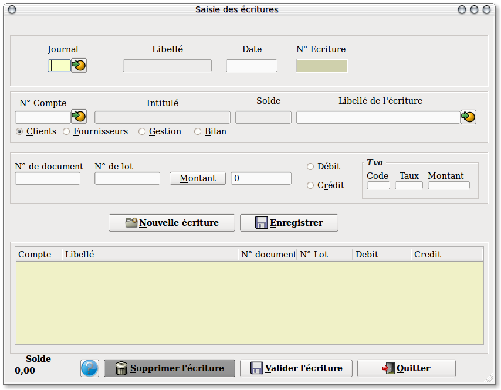
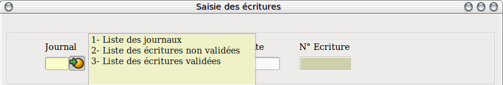
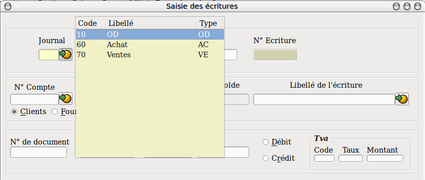
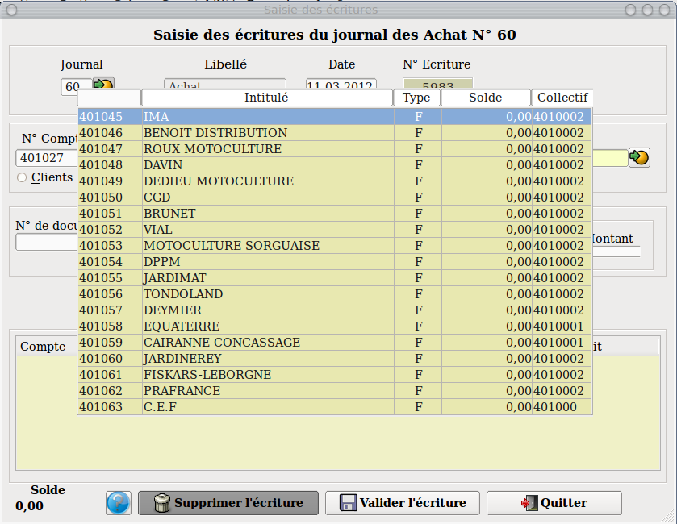
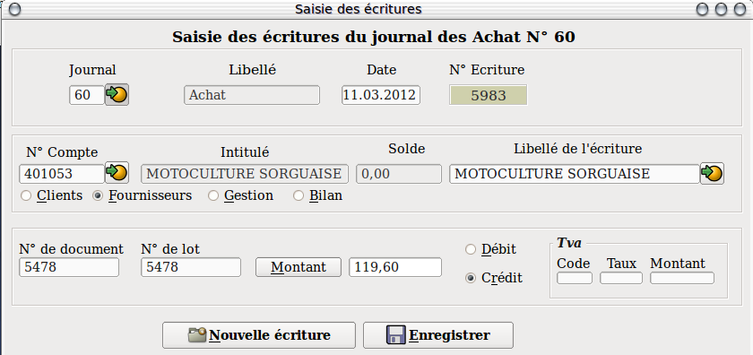
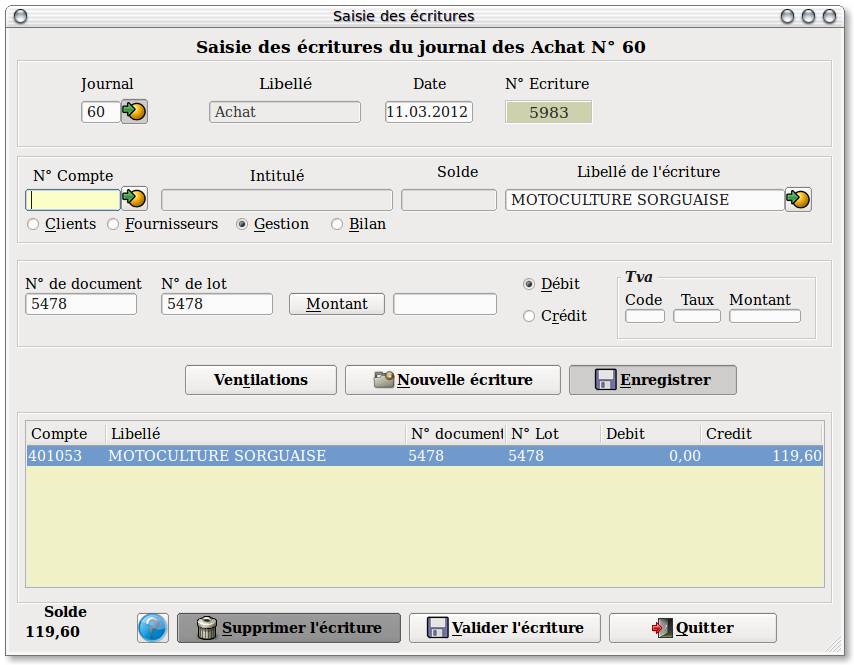
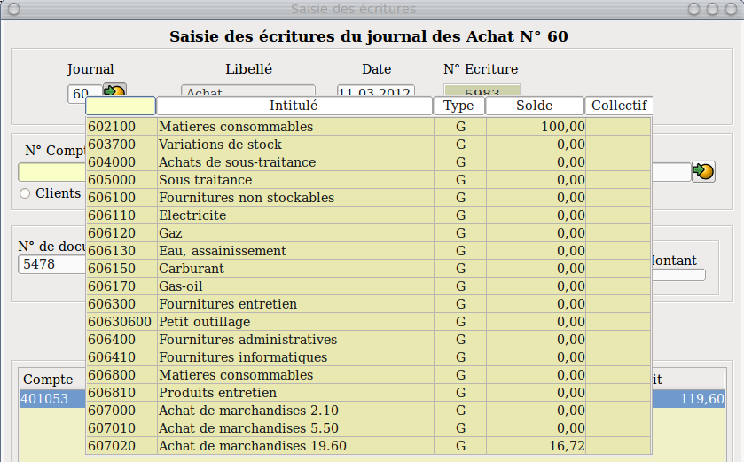
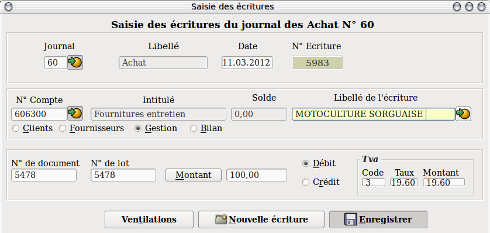
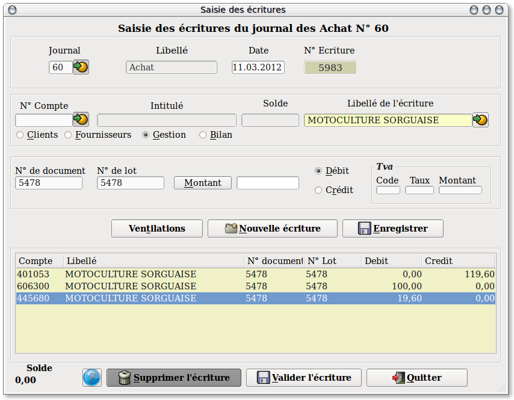

Transitional//EN">
Saisies des écritures comptables (Achats, Ventes,
OD)

L'écran
de saisie se découpe en deux parties. La partie haute est la
zone de saisie et la partie basse est la zone ou sont
stockées les lignes saisies mais non encore
validées. Bien entendu la validation n'est possible que dans
le cas ou le solde soit égal à zéro.
Si vous quittez le journal sans avoir
validez votre saisie ou bien, si vous cliquez sur le bouton "Nouvelle écriture" ,
l'écriture en cours se retrouvera dans les lignes de saisies
non validées ( Voir le paragraphe concerné )
sinon, si vous cliquez sur le bouton "Valider
l'écriture" elle sera dans les
écritures validées.
Nb:
Une écriture
peut être modifiée ou supprimée
seulement si la clôture n'a pas été
effectuée.

Vous
pouvez d'un
simple clic sur le symbole  à
droite de la zone "journal décider si
vous souhaitez saisir une nouvelle écriture ou bien en
modifier ou en supprimer une.
à
droite de la zone "journal décider si
vous souhaitez saisir une nouvelle écriture ou bien en
modifier ou en supprimer une.

Dans
le cas d'une
sélection sur la "Liste
des journaux" vous aurez une nouvelle fenêtre
qui vous permettra de sélectionner votre Journal.
Aprés la saisie du journal un "Titre", dans la partie haute
de l'écran, mentionnera sur quel journal s'effectuera la
saisie.
Le
libellé du
journal s'affiche dans la zone réservée, la date
est, par défaut, la date du jour. Cette zone est modifiable
contrairement au numéro d'écriture qui
s'incrémente à chaque nouvelle saisie, c'est
à dire lors de chaque nouvelle validation de la date.

Puis
vous allez
saisir le code du compte avec lequel vous souhaitez travailler,
l'intitulé et le solde du compte s'affichent tandis que le
sens de
l'écriture se met automatiquement en fonction du type de
compte saisit.

Saisir
alors le
montant , le No de document se reporte dans le No de lot (sert pour
le lettrage) et enfin le libellé de l'écriture.
Cliquer ensuite sur le bouton "Enregistrer"
pour que votre saisie bascule dans la partie basse de
l'écran et que son solde (En bas à gauche) soit
mis à jour.

Vous
remarquerez
qu'aprés l'enregistrement de votre ligne, seules les zones "Code",
Intitulé",
"Solde" et "Montant "
sont remises à blanc. Cela vous permet de saisir de saisir
vos
ventilations (ou contre partie) avec les mêmes
numéros de document et de lot que ceux du client ou du
fournisseur.
Il est possible, pour gagner du temps,
de ne saisir que les 3 premiers caractères du compte. Le programme fera
la complètion automatique avec les zéros manquants. Par exemple saisir
607 et valider. Le programme récupérera le compte 607000.

En
outre, aprés la
validation de l'écriture sur le compte client ou
fournisseur, un bouton "Ventilations",
apparait. Il suffit de
cliquer sur ce bouton pour récupérer les
ventilations saisies dans le compte concerné (Voir sur fiche
client ou fournisseur) .

Aprés
le rappel
d'une ventilation, le compte s'inscrit dans sa zone avec son
intitulé et son solde. Il suffit de saisir le montant Ht de
l'écriture puis d'enregistrer.

Si
dans la fiche du
compte ventes ou achats vous avez coché le bouton "Génération
Tva "
et correctement indiqué le code Tva qui sera
utilisé, le
calcul de la Tva se fera automatiquement.
Lorsque
l'écriture
est soldée, cliquez sur le bouton "Valider
l'écriture" pour remettre l'ensemble des zones
à blanc afin d'en saisir une nouvelle.
Dans la zone "Numéro de compte" on peut taper "<" pour repeter le dernier numéro de
compte saisi, "F4" pour appeler la table des comptes et "F8" pour appeler l'extrait de compte.
Dans la zone "Montant" on peut taper sur la touche "*" pour récuperer le solde de l'écriture
----------------------------------------------------------------------------------------------------------------------
Pour
rappeler une
écriture (Validée ou non), cliquez sur le symbole
à
droite de la zone "Journal"
et sélectionnez la ligne souhaitée. Une nouvelle
fenêtre s'ouvrira avec
l'ensemble des lignes concernées. Il suffit de cliquer sur
la ligne
d'écriture qui nous interresse pour que le détail
de celle-ci s'affiche dans la partie basse de l'écran.
Ensuite, un double clic ramérera l'étriture dans
la partie haute de l'écran afin d'y apporter les
modifications
souhaités.
Pour appeler un masque de
saisie, il y a deux possibilités. Faire "F7"
quand on est dans la zone "Comptes" ou
alors, faire un clic droit
sur la zone d'affichage des lignes saisies.
Pour fermer la fenêtres des masques sans rien saisir, faire "F7" ou "Escape"
N'oubliez pas d'enregistrer votre
modification et de
valider votre écriture.
----------------------------------------------------------------------------------------------------------------------
Retour en haut de
la page
Retour a
l'index